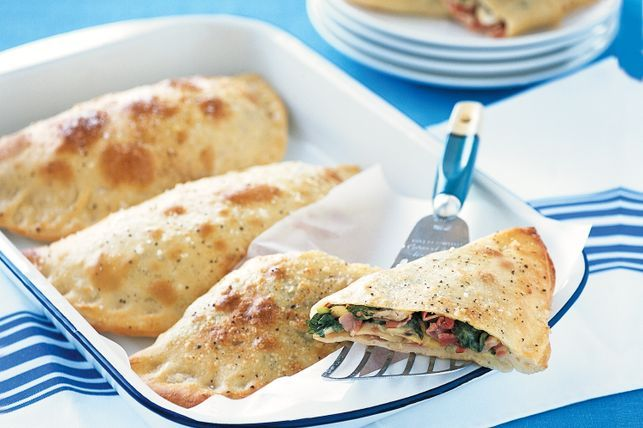

Calzones

Ingredients
8g sachet instant dried yeast
1/4 tsp salt
1 tsp caster sugar
3/4 cup warm water
2 cups plain flour
2 1/2 tbsp olive oil
250g pancetta or thinly-sliced ham
200g button, cup or Swiss brown mushrooms, sliced
100g cheddar cheese, grated
1 small bunch rocket, shredded
1 egg, lightly beaten
2 tsp sea salt flakes
Method
1. Combine yeast, salt, sugar and warm water in a jug. Stir with a fork. Cover with plastic wrap.
Set aside in a warm place for 5 minutes or until bubbles form on surface. Sift flour into a large bowl.
Add yeast mixture and 2 tablespoons oil. Mix to form a soft dough.
2. Turn dough onto a lightly floured surface. Knead for 8 minutes or until smooth and elastic.
Place in a lightly greased bowl. Cover with plastic wrap. Set aside in a warm place for 15 to 20 minutes (on a hot day) or until doubled in size.
Preheat oven to 220°C. Brush a large baking tray with remaining oil.
3. Punch dough with your fist. Knead gently on a lightly floured surface. Cut dough into 4 pieces.
Knead each piece into a ball. Roll each ball into a 24cm (diameter) round.
4. Arrange a quarter of the pancetta, mushroom, cheese and rocket over half of each round, leaving a 2cm border around the edge.
Brush edge with water. Fold dough over to enclose filling. Press edges together to seal.
5. Place calzones on prepared tray. Brush tops with egg. Sprinkle with sea salt and pepper.
Bake for 10 to 15 minutes or until golden and crisp. Serve.